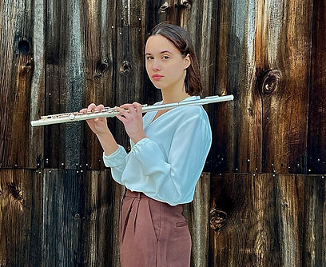
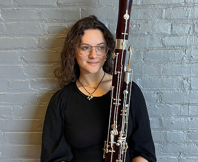

Our Events
Every concert doubles as a fundraiser.
Each one is organized around a partner organization doing frontline community work.
Upcoming
Loading events…
Past Events
Loading events…
IN PROGRESS! NEW CONCERT SERIES
FIRST PARAGRAPH
SECOND IF NEEDED
Meet the Musicians
-
Sadie Habas
Mezzo-Soprano
-
Matthew Lee
Flute
-

Bryce Cox
Flute, Organizer
-

Nora Cannizzaro
Bassoon
-
Nathalie Vela
Oboe
-
Anya Mazaris-Atkinson
Flute
-
Christopher Relyea
French Horn
-
Corrin Kliewer
Flute
What We're Doing, and Why
Every Musicians for Progress event is built around a simple idea: musicians have platforms, audiences, and skill worth putting toward something bigger than a performance. By pairing a concert with a specific partner and cause, we turn an evening of music into direct, tangible support — funding, supplies, or visibility — for the organizations doing the harder, ongoing work.